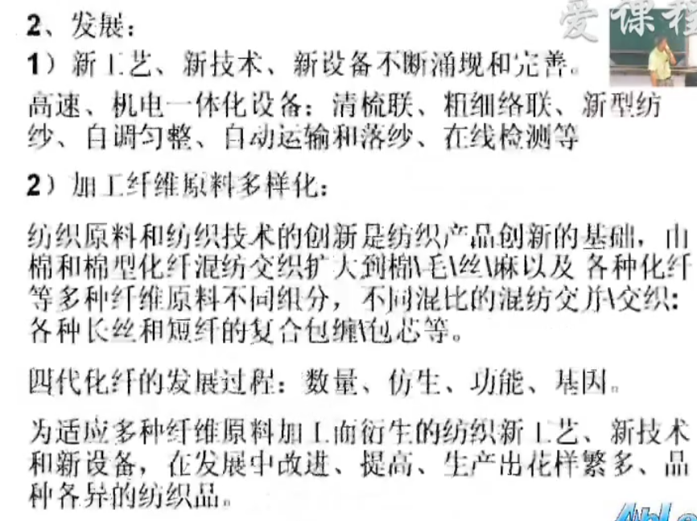

纺纱学
绪论
纤维 纺纱 织布 染整 服装
短纤维：25毫米不可以纺纱
33 长绒棉
长度范围：25-100mm
纺纱概念
纺纱基本原理
一级棉性能也不同（不同地域的），为什么总说新疆棉原来如此。 不同性能的棉，需要机器使用不同的参数纺纱。若均匀搭配不同性能的棉，则不需要改变参数。 短与长混合也可以叫长棉。短纤维影响成纱质量，包含短纤维会怎么样？？？
纺纱工艺系统
纤维（性能，结构）质量不同，工艺流程不同棉型纺纱系统（棉纺系统）
棉花等一般长度30mm左右，使用此类设备
普梳系统 ：清、梳、条、粗、细
人造纤维因其长度粗细均匀普梳就可达到高质量的纱线要求
毛型纺纱系统
…
绢纺系统
…
麻型纺纱系统
韧皮类型
苎麻纺纱系统
长麻纺纱系统
短麻纺纱系统
亚麻纺纱系统
棉纺工艺系统
棉纺工艺系统加工30~40mm类型的纤维

纺纱生产 manufacturing of spun yarn
原料是影响纺纱的重要因素
- 细度 Fiber fineness
- 长度 Fiber Length
- 强度 Fiber Strength
- 伸长 Fiber Elongation
- 刚度 fiber stiffness
- 清洁度 Fiber Cleaness ：impurities/neps/dust 杂质/棉结/灰尘
纺织的方法 principle of yarn production
纤维的特性不同使用不同的纺纱系统（特性：长度）
roving 粗纺
combed 精梳
carded system 普梳系统 carded yarn 普梳纱
combed system 精梳系统 carded yarn 精梳纱